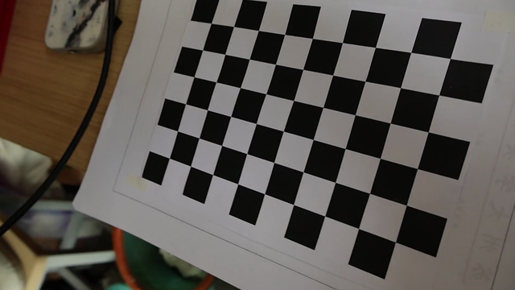
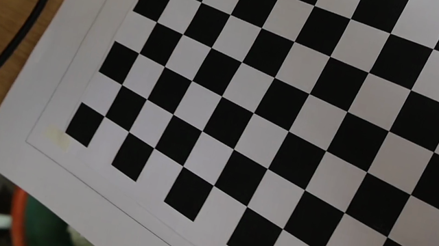
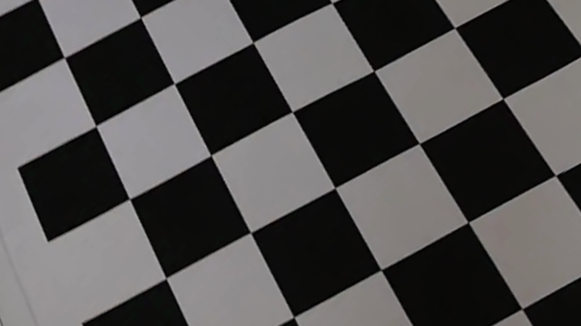
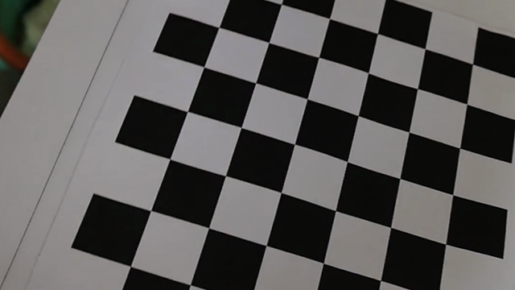
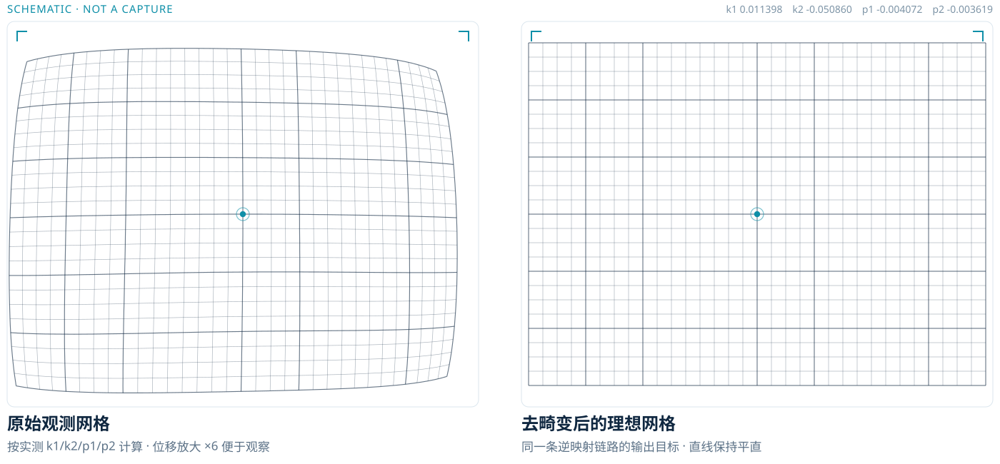
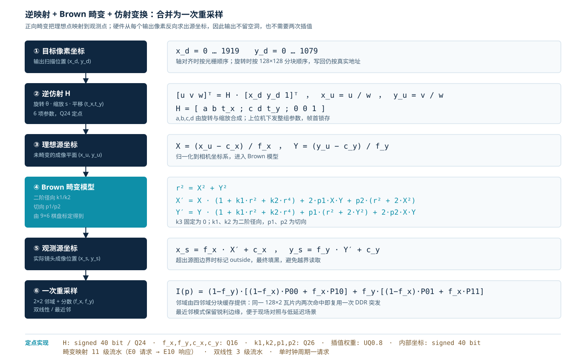
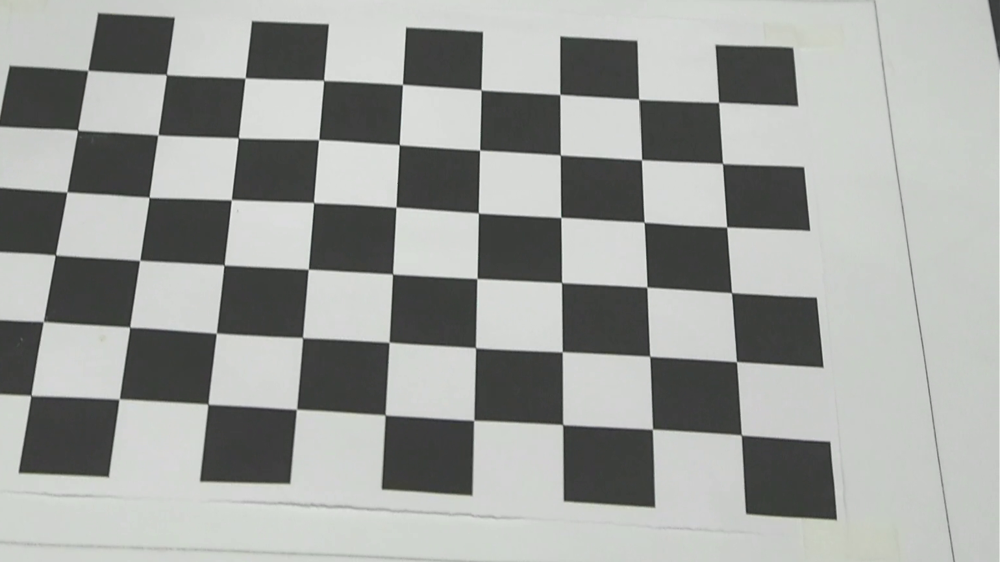
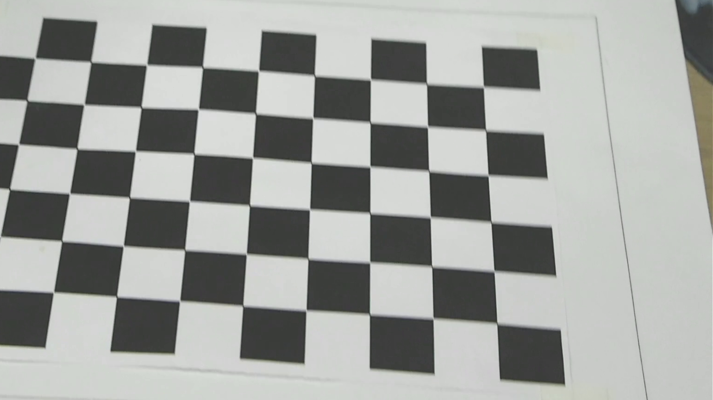

RTL 仿真输出
0° / 12° / 45° / 90°
0° / 12° / 45° / 90°

0°
12°
45°
90°基于紫光同创 Logos-2 PG2L100H 的 1080p30 实时镜头畸变矫正与角度控制

0°
12°
45°
90°三个关键词——单次重采样 · 分块缓存 · 帧同步锁参

镜头畸变与角度变换合并成一条逆映射，每个输出像素只插值一次。
128×2 瓦片 + 128 行容量，旋转时源行在块内反复命中。
六项 Q24 系数整组跨时钟传递，只在下一幅新帧首拍生效。
释放必须带回帧代数，坏帧拒绝、旧帧不误释放。
数值模型 → RTL 仿真 → 综合网表 → 实板录像；每条结论绑定源码哈希与时间目录，不以"仿真通过"代替"上板通过"。
逆仿射 + Brown 畸变，合并为一次 2×2 采样
| 量 | 格式 |
|---|---|
| 仿射 H | signed 40 / Q24 |
| 内参 fx fy cx cy | Q16 |
| 畸变 k1 k2 p1 p2 | Q26 |
| 插值权重 | UQ0.8 |
| 内部坐标 | signed 40 |

从数值模型到实板录像的四层证据


